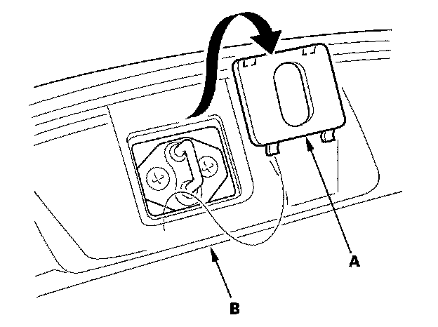
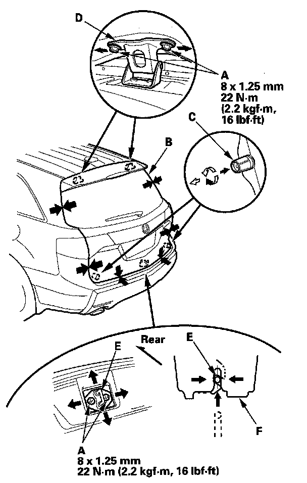
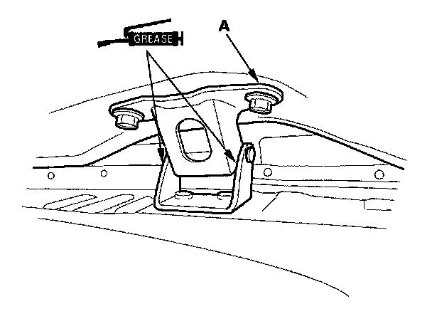

Trunk / Liftgate: Adjustments
Tailgate AdjustmentSpecial Tools Required
KTC trim tool set SOJATP2014 *
* Available through the American Honda Tool and Equipment Program
NOTE:
- Put on gloves to protect your hands.
- Use the appropriate tool from the KTC trim tool set to avoid damage when removing components.
1. With power tailgate: Make sure you have the anti-theft code for the audio and the navigation system (if equipped).
2. With power tailgate: Disconnect the negative cable from the battery.
NOTE: Open the tailgate by using the emergency lever while adjusting the tailgate.
3. Remove the Support strut from each side.

4. Remove the striker cap (A) from the rear trim panel (B).

5. Slightly loosen each bolt (A).
6. Adjust the tailgate (B) alignment in the following sequence:
- Adjust the tailgate right and left, using the elongated holes in the tailgate hinges (C).
- Turn the tailgate edge cushions (D), in or out as necessary, to make the tailgate fit flush with the body at the side edges.
- Adjust the fit between the tailgate and tailgate opening by moving the striker (E), and adjust the striker right or left until it is centered in the tailgate latch (F).
7. Tighten each bolt securely.
8. Check that the tailgate opens properly and locks securely.
9. Reinstall the support struts securely.
10. Apply touch-up paint to the hinge mounting bolts and around the hinges, and let the paint dry.

11. Apply multipurpose grease to the pivot portion of the tailgate hinges (A) as indicated by the arrows.
12. Reinstall all of the removed parts.
13. With power tailgate: Reconnect the negative cable to the battery.
NOTE:
- Enter the anti-theft code for the audio and the navigation system (if equipped).
- Set the clock.
- Check for any DTCs that may have been set during repairs, and clear them.
- Do the steering column position memorization.